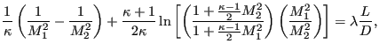
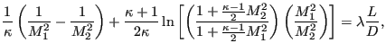

Keyword type: step
With *CONSTRAINT one can define constraints in a sensitivity step. It can onlybe used for design variables of type COORDINATE. Furthermore, exactly oneobjective function has to be defined within the same sensitivity step (usingthe *OBJECTIVE keyword).
A constraint is an inequality expressing a condition on the objectivefunction. The inequality can be of type ``smaller than or equal'' (LE) or``larger than or equal'' (GE). The reference value for the inequality is tobe specified by a relative portion of an absolute value (the latter in theunits used by the user). For instance, suppose the user introduces an absolutevalue of 20 and a relative value of 0.9 for a LE constraint on the mass. Thanthe mass is not allowed to exceed 0.9  20 = 18 mass units. If theabsolute value is zero, the initial value is taken, e.g. for the mass thiscorresponds to the mass at the start of the calculation.
20 = 18 mass units. If theabsolute value is zero, the initial value is taken, e.g. for the mass thiscorresponds to the mass at the start of the calculation.
Right now, the following constraints are allowed:
 | (465) |
where  is the von Mises stress in node i,
is the von Mises stress in node i,  and
and  are user-defined parameters. The higher
are user-defined parameters. The higher  the closer  is to the actualmaximum (a value of 10 is recommended; the higher this value, the sharper theturns in the function).
the closer  is to the actualmaximum (a value of 10 is recommended; the higher this value, the sharper theturns in the function).  is the target stress, itshould not be too faraway from the actual maximum.
is the target stress, itshould not be too faraway from the actual maximum.
First line:
Second line:
Example: *CONSTRAINT. MASS,E1,LE,,3.
specifies that the mass of element set E1 should not exceed 3 in the user's units.
Example files: .